1 导数概念
1.1 函数在一点处可导的概念
1.1.1 导数定义
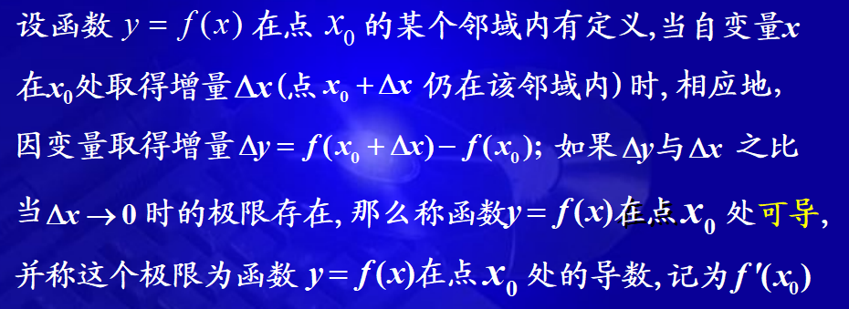
数学定义为：
f′(x0)=Δx→0limΔxΔy=Δx→0limΔxf(x0+Δx)−f(x0)
也可记作：
y′∣x=x0 dxdy∣∣∣∣∣x=x0或dxdf(x)∣∣∣∣∣x=x0
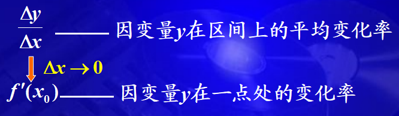
导数的定义式: f′(x0)=limΔx→0Δxf(x0+Δx)−f(x0)或f′(x0)=limh→0hf(x0+h)−f(x0)=limx→x0x−x0f(x)−f(x0)
1.1.2 单侧导数
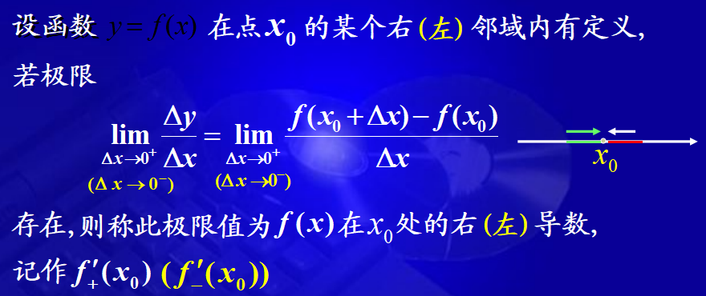
y=f(x)在点x处可导等价于 $ f_{+}^{\prime}\left(x_{0}\right) $ 和 $ f_{-}^{\prime}\left(x_{0}\right) $ 都存在且相等。
1.1.3 几何意义
导数的几何意义是曲线y=f(x)在点(x0,y0)的切线斜率
y−y0=f′(x0)(x−x0)
y−y0=−f′(x0)1(x−x0)(f′(x0)=0)
1.1.4 可导与连续的关系
定理：f(x)在点x0处可导⟶f(x)在点x0处连续
连续不一定可导，可导一定连续。
f(x)=3x，在 x = 0处连续，但在x = 0 处不可导。
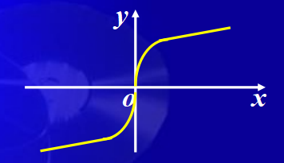
f(x)=∣x∣，在 x = 0处连续，但在x = 0 处不可导。
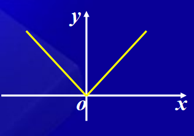
函数在区间上可导的概念
定义：若函数y=f(x)在(a,b)内的每一点处可导，则称函数y=f(x)在(a,b)内可导.
定义：若函数y=f(x)在(a,b)内的每一点处可导,在x=a处右可导,在x=b处左可导,则称函数y=f(x)在[a,b]上可导.
定义: 若函数 y =f(x) 在区间 I 上的每一点处可导,这时，对于区间 I 上的任一点 x, 都对应着 f(x)的一个确定的导数值, 这样就构成了一个新的函数,这个函数称为原来函数 f(x) 的导函数.
记作:y′,f′(x), dxdy或dxdf(x)
f′(x)=Δx→0limΔxf(x+Δx)−f(x)
- 区别：f′(x)一函数f′(x0)一数
- 联系：f′(x0)=f′(x)∣x=x0
1.2 求导步骤
- 算增量：Δy=f(x+Δx)−f(x)
- 求比值：ΔxΔy=Δxf(x+Δx)−f(x)
- 取极限：f′(x)=limΔx→0ΔxΔy=limΔx→0Δxf(x+Δx)−f(x)
注意：求分段函数在分段点处的导数必须用定义
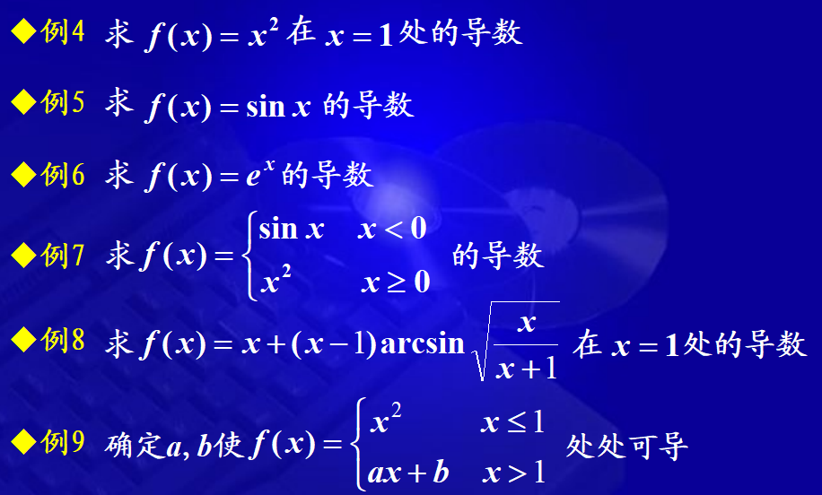
1.3 四则运算求导法则
定理：如果函数u=u(x)及v=v(x)都在点x具有导数，那么它们的和、差、积、商（除分母为0的点外）都在点x具有导数，则：
- (u±v)′=u′±v′
- (uvw)′=u′vw+uv′w+uνw′
- (vu)′=v2u′v−uv′
1.4 反函数的求导法则
定理：$如果函数 x=f(y) 在区间 I_{y} 内单调、可导且 f^{\prime}(y) \neq 0,则它的反函数 $$y=f^{-1}(x) $在区间 $ I_{x}=\left \{x \mid x=f(y), y \in I_{y}\right\} $ 内也可导，且 $ \left(f^{-1}(x)\right)^{\prime}=\frac{1}{f^{\prime}(y)} 或 \frac{\mathrm{d} y}{\mathrm{~d} x}=\frac{1}{\frac{d x}{d y}} $ 。
即反函数的导数等于直接函数导数的倒数。
定理：如果u = g(x) 在点x可导，而 y = f(u) 在点 u = g(x) 可导，则复合函数 y = f[g(x)] 在点x可导，且
dxdy=f′(u)⋅g′(x)或 dxdy= dudy dxdu。
1.5 常用初等函数的导数公式
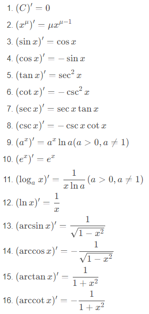
2 隐函数及由参数方程所确定的函数的导数
2.1 隐函数
2.1.1 隐函数的导数
找到一种方法，不管隐函数是否能够显化，都直接由方程算出其确定的隐函数的导数。
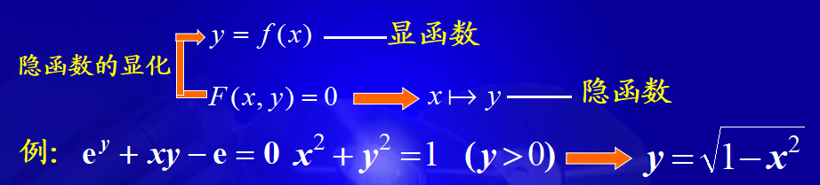
求导步骤
- 方程两边同时对x求导，将y视为x的函数，将含y的项视为x的复合函数
- 解出y’
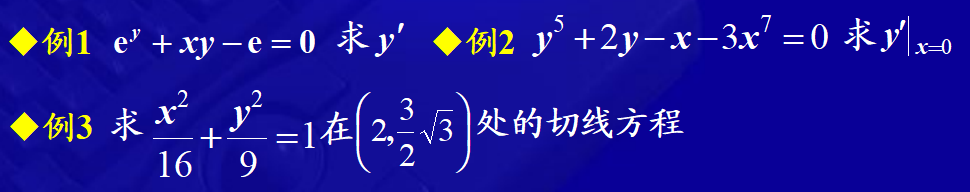
2.1.2 对数求导法
对于幂指函数来说，直接求导可能不太好算，可以先对其求对数，然后进行求导。
参数方程确定的函数的导数
2.1.3 概念与求导法
一般地，若参数方程：
{x=φ(t)⟺t=φ−1(x)⟺ dxdt=1/ dtdxy=ψ(t)⟺y=ψ(φ−1(x))⟺ dxdy= dtdy dxdt
参数方程确定的函数的导数：
dxdy= dtdy/ dtdx=φ′(t)ψ′(t)
dxdy依然是x的函数,视为中间变量。
2.1.4 相关变化率
x=x(t),y=y(t)为两可导函数，x和y之间有联系，则 dtdx, dtdy之间也有联系，称为相关变化率，有时给你其中一个导数，可以求出另外一个导数。
解题方法：
- 找出相关变量的关系式
- 对上式中t求导，得到相关变化率之间的关系式
- 求出未知的相关变化率
一气球从离开观察员500m处离地面铅直上升，其速率为140 m/min，当气球高度为500m时，观察员视线的仰角增加率是多少?
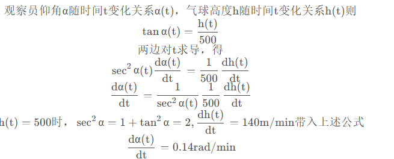
3 高阶导数
n阶导数的定义式
f(n)(x)=h→0limhf(n−1)(x+h)−f(n−1)(x)
3.1 求导方法
3.1.1 简单函数
3.1.2 复杂函数
⎩⎪⎪⎪⎨⎪⎪⎪⎧(u±v)(n)=u(n)±v(n)(uv)(n)=∑k=0nCnku(n−k)v(k)一莱不尼莰公式
函数的微分
3.2 微分的概念
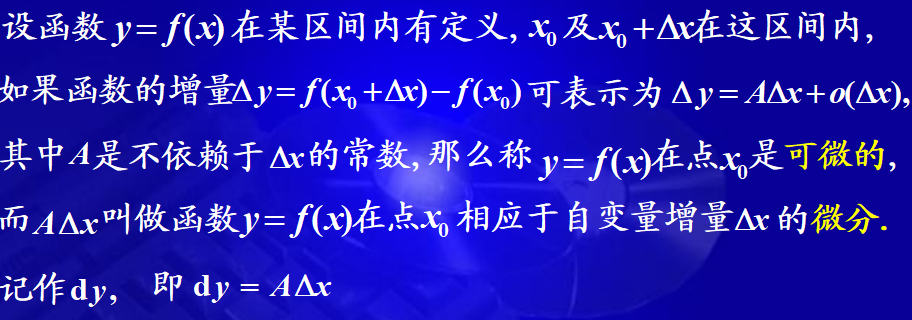
注意：
- 微分的特性：
- A仅与与x0有关，与Δx无关
- dy与A及Δx有关
y=f(x)在x0处可微⟷y=f(x)在x0处可导
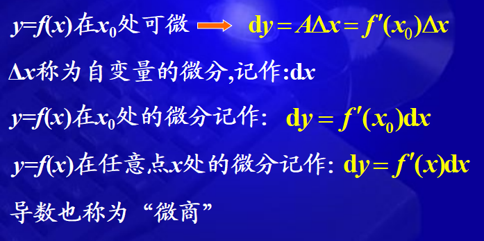
3.3 几何意义
Δy=f(x0+Δx)−f(x0)=f′(x0)Δx+o(Δx)
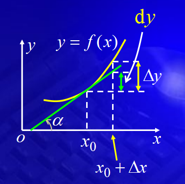
几何意义：切线纵坐标的增量
思想：在一个微小的局部“以直代曲，以不变代变”
3.4 微分运算
3.4.1 基本初等函数的微分公式
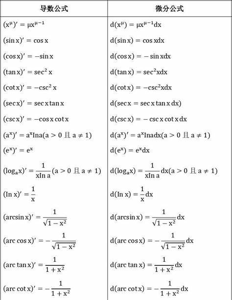
3.4.2 函数和、差、积、商的微分法则
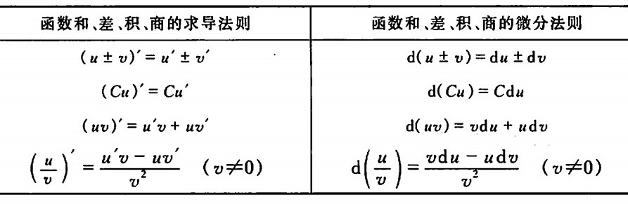
3.4.3 复合函数的微分法则
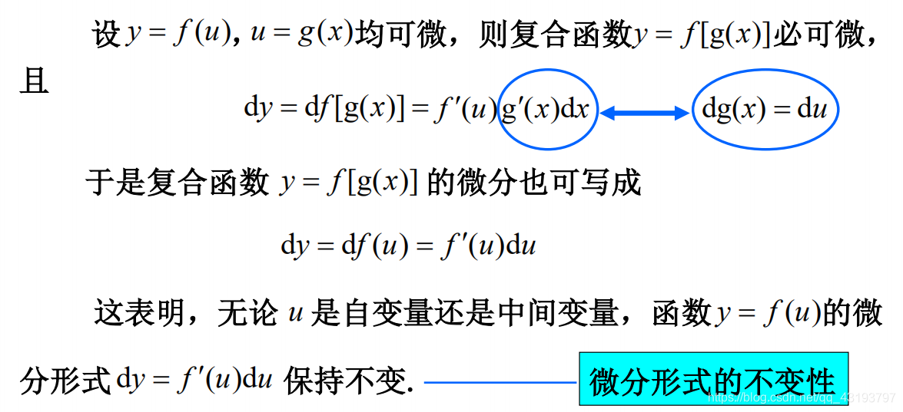